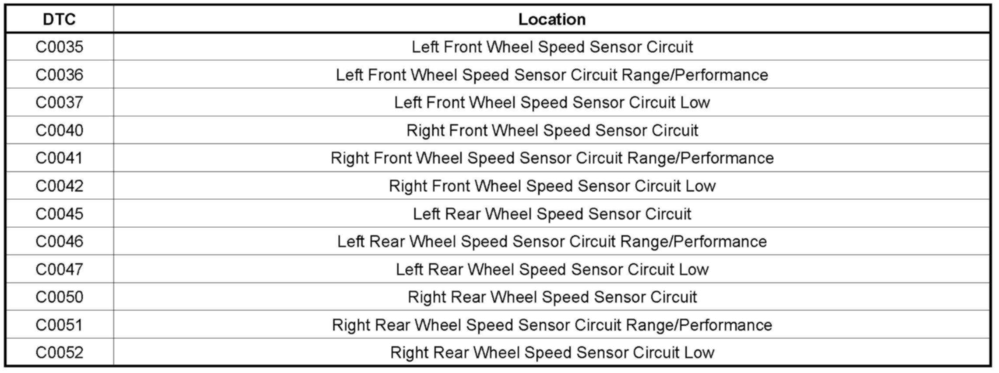
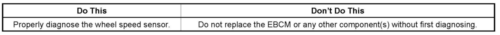

ABS/TCS - ABS/TCS Lamps ON/DTC's C0035-C0052 Set
TECHNICALBulletin No.: 08-05-25-004A
Date: October 27, 2008
Subject:
Antilock Brake System (ABS), Traction Control System (TCS) or StabiliTrak(R) Light On, DTCs C0035-C0052 Set (Perform Diagnostic Component Test Procedure and Repair as Necessary)
Models:
2007 Buick Terraza
2007-2009 Buick Allure, LaCrosse, Lucerne
2007-2008 Cadillac XLR
2007-2009 Cadillac DTS, SRX, and STS
2007-2008 Chevrolet Corvette
2007-2009 Chevrolet Impala, Uplander
2007-2008 Pontiac Grand Prix
2007-2009 Pontiac Montana SV6
2007 Saturn Relay
Supercede:
This bulletin is being updated to add models. Please discard Corporate Bulletin Number 08-05-25-004 (Section 05 - Brakes).
Condition

Some customers may comment that the Antilock Brake System (ABS), Traction Control System (TCS) or StabiliTrak(R) (if equipped) warning lights are illuminated. Upon investigation, one or more of the following DTCs may be in history or current.
Correction

Begin diagnostics with the component test procedure listed below. If the cause is not found, proceed to the Circuit/System Testing on the applicable Diagnostic Information and Procedures document for the vehicle you are working on. SI Diagnostic Information and Procedures are being revised to reflect this change in strategy.
1. With the ignition OFF, disconnect the harness connector at the appropriate wheel speed sensor.
2. Test for 850-1350 ohms between the signal terminal A and the low reference signal terminal B. During the test, check for an intermittent circuit condition by gently moving the wheel speed sensor pigtail harness. If not within the specified range, replace the wheel speed sensor.
3. Test for infinite resistance between each terminal and the steering knuckle. Reverse the test leads, test for infinite resistance between each terminal and the steering knuckle again. If less than the specified value, replace the appropriate wheel speed sensor.
4. Spin the wheel while monitoring the voltage between the signal terminal A and the low reference terminal B. The voltage should be greater than 100 mV AC. If less than the specified range, replace the wheel speed sensor.
Warranty Information
For vehicles repaired under warranty, use the applicable bearing and hub assembly published labor code.

Disclaimer